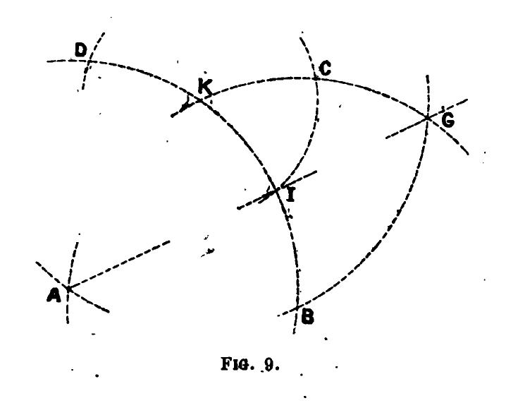

Problèmes XLVII–XLVIII : Carré de Catalan et axes de l’ellipse¶
Émile Lemoine — La Géométrographie (Texte français de référence, pp. 34–36, fols. 0050–0052)
Nous allons compléter cette étude par quelques applications prises un peu au hasard et par quelques remarques qui permettront de comprendre mieux l’esprit et, je l’espère, l’utilité de notre méthode.
XLVII. — Les deux extrémités A et B du côté d’un carré étant placées, placer les deux autres sommets C et D.
Je décris (fig. 9) AAB, BAB qui se coupent en K ; je décris KAB qui coupe BAB en G \(\mathrm{op.} : (4C_1 + 3C_3)\).
Je trace AG qui coupe AAB en I \(\mathrm{op.} : (2R_1 + R_2)\).
Je trace KKI qui coupe BAB en C et AAB en D \(\mathrm{op.} : (2C_1 + C_3)\).
En tout : \(\mathrm{Op.} : (2R_1 + R_2 + 6C_1 + 4C_3)\) ; simplicité 13 ; exactitude 8 ; 1 droite, 4 cercles.


Nous tenons cette construction simple de M. Eugène Catalan, qui nous a dit l’avoir trouvée en 1847.
En ajoutant le symbole : \(\mathrm{op.} : (6R_1 + 3R_2)\), elle pourrait servir à construire le carré ABCD sur une base donnée, à très peu près aussi simplement que par la construction ordinaire qui peut se faire — en la conduisant convenablement — par le symbole :
\(\mathrm{Op.} : (6R_1 + 3R_2 + 7C_1 + 5C_3)\) ; simplicité 21 ; exactitude 16 ; 3 droites, 5 cercles.
Par tout ce qui précède, on voit déjà qu’il y a bien un véritable art des constructions géométriques, que nous appelons la Géométrographie, qui, quoique n’ayant point été remarqué jusqu’ici, repose sur des principes d’une simplicité extrême ; son importance tient, non principalement au temps qu’en le pratiquant, on peut gagner dans la construction d’une figure, ce qui, à certain point de vue, est un détail, mais surtout à l’exactitude plus grande qu’il permet d’atteindre en réduisant au minimum le nombre des opérations à effectuer. Enfin, il présente l’avantage d’être un critérium pour juger de la simplicité d’une construction. Le besoin de ce critérium sera démontré quand on remarquera que la plupart des constructions célèbres par leur simplicité et leur élégance ne sont pas ordinairement les plus simples à construire qui soient connues. On les a cru simples parce qu’elles s’énonçaient simplement en faisant image et se retenaient sans difficulté ; nous citerons, par exemple, la célèbre construction de M. Chasles, pour placer les axes (en grandeur et en position) d’une ellipse dont deux diamètres conjugués sont placés en grandeur et en position ; elle n’est pas la plus simple à construire, il s’en faut ; l’on en connaissait de plus simples… sans que l’on s’en doutât.
f. 0051 · p. 35XLVIII. — Voici cette construction telle qu’elle est donnée dans l’Aperçu historique, note 25 ; j’y ajoute les lettres nécessaires à l’intelligence de ce que nous avons à dire.
a) Par l’extrémité \(A\) d’un des deux demi-diamètres conjugués donnés, on mène une droite perpendiculaire au second diamètre \(OB\) \(\mathrm{op.} : (2R_1 + R_2 + 3C_1 + 3C_3)\) ; on porte sur cette perpendiculaire, à partir du point \(A\), deux segments \(AC\), \(AD\) égaux à ce second diamètre \(\mathrm{op.} : (3C_1 + C_3)\) ; on joint le centre \(O\) aux points \(C\) et \(D\) \(\mathrm{op.} : (4R_1 + 2R_2)\) ; on divise en deux parties égales, par deux nouvelles droites, l’angle \(COD\) et son supplément \(\mathrm{op.} : (4R_1 + 2R_2 + 4C_1 + 4C_3)\).
Ces deux nouvelles droites seront en direction les deux axes principaux de l’ellipse. La somme des deux premières droites \(OC\) et \(OD\), sera le grand axe de l’ellipse, leur différence sera égale au plus petit.
Le géomètre s’arrête là, ayant indiqué des constructions dont le symbole est \(\mathrm{op.} : (10R_1 + 5R_2 + 10C_1 + 8C_3)\).
Mais voici ce qui reste à faire au constructeur pour fixer les axes à leur place, en grandeur :
Tracer le cercle \(O(OD)\) qui coupe \(OC\) en deux points \(E\) et \(F\) de façon à avoir la longueur \(CE\) du petit axe et la longueur \(CF\) du grand axe \(\mathrm{op.} : (2C_1 + C_3)\).
Diviser \(CE\) et \(CF\) en deux parties égales, ce qui, puisqu’elles ont \(C\) pour extrémité commune, peut se faire par \(\mathrm{op.} : (4R_1 + 2R_2 + 3C_1 + 3C_3)\).
Prendre les demi-longueurs ainsi déterminées des axes et les porter chacune sur l’axe convenable, choix très simple à faire, mais dont le géomètre ne parle pas \(\mathrm{op.} : (6C_1 + 2C_3)\).
Quand il s’est arrêté, il restait donc à construire \(\mathrm{op.} : (4R_1 + 2R_2 + 11C_1 + 6C_3)\), c’est-à-dire un peu plus des deux tiers de ce qui était indiqué.
La construction totale, économiquement menée d’après nos principes, se résume par le symbole :
\(\mathrm{Op.} : (14R_1 + 7R_2 + 21C_1 + 14C_3)\) ; simplicité 56 ; exactitude 35 ; 7 droites, 14 cercles.
Il est clair qu’une des choses qui complique l’application, à la construction particulière dont il s’agit, de l’élégant théorème du maître, c’est que ce sont les axes qui sont trouvés par lui, et qu’il faut les demi-axes pour la construction, puis il faut encore reporter leurs longueurs en position sur \(OC\) et sur \(OD\) ; c’est un détail pour le géomètre spéculatif, mais point pour celui qui trace l’épure.
f. 0052 · p. 36Nous nous proposons quelque jour de comparer les très nombreuses solutions qui ont été données du même problème afin de déterminer quelle est la plus simple, et de faire le même travail pour divers problèmes célèbres ; en attendant, nous donnerons, de ce même problème, une solution due à M. Mannheim, qui est beaucoup plus simple que la solution classique de Chasles et qui se trouve dans les N. A., 1878, p. 529.
b) Soient om, on les deux diamètres conjugués donnés.
De m j’abaisse une perpendiculaire md sur on (d étant sur on), je porte sur cette perpendiculaire (dans le sens dm) \(me = no\) \(\mathrm{op.} : (2R_1 + R_2 + 6C_1 + 4C_3)\).
Sur \(oe\) comme diamètre, je trace une circonférence dont le centre est i et je trace im qui coupe cette circonférence en c et en g \(\mathrm{op.} : (6R_1 + 3R_2 + 4C_1 + 4C_3)\).
Je trace oc, og, ce sont les axes en position \(\mathrm{op.} : (4R_1 + 2R_2)\).
Les distances mc et mg (que je n’ai pas besoin de tracer) sont les longueurs des demi-axes.
Je porte les longueurs mc, mg sur les directions respectives des axes qu’elles représentent et ces axes se trouvent placés aussi en grandeur \(\mathrm{op.} : (6C_1 + 2C_3)\).
En tout : \(\mathrm{op.} : (12R_1 + 6R_2 + 16C_1 + 9C_3)\) ; simplicité 43 ; exactitude 28 ; 6 droites, 9 cercles.
M. Mannheim n’avait pas indiqué, non plus, dans l’article cité, quelle était celle des deux droites oc et og qui était le grand axe ; mais il a complété la solution (voir N. A., 1889, p. 329) en montrant que la direction du grand axe est celle de la droite qui joint o à celui des deux points c ou g qui limite la longueur du petit axe.
Cette solution complète est la plus simple de celles du même problème dont nous avons évalué la simplicité, mais rien ne prouve qu’il n’y en ait pas ou que l’on n’en trouve pas de plus simples encore.